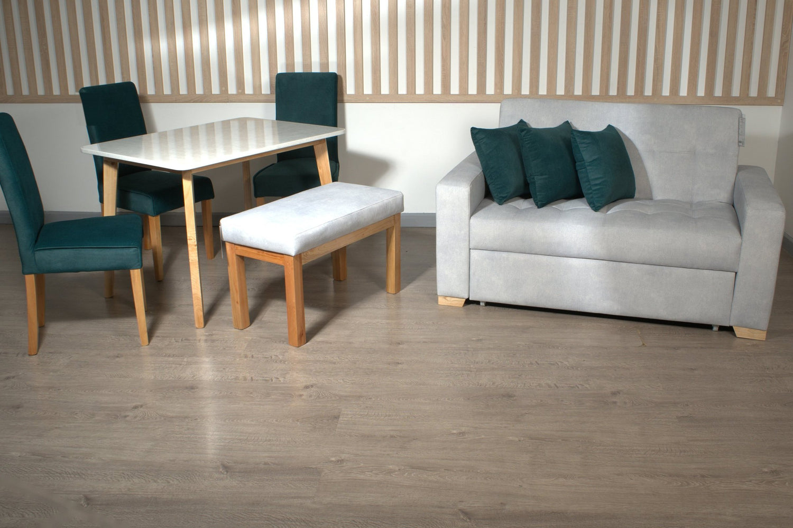
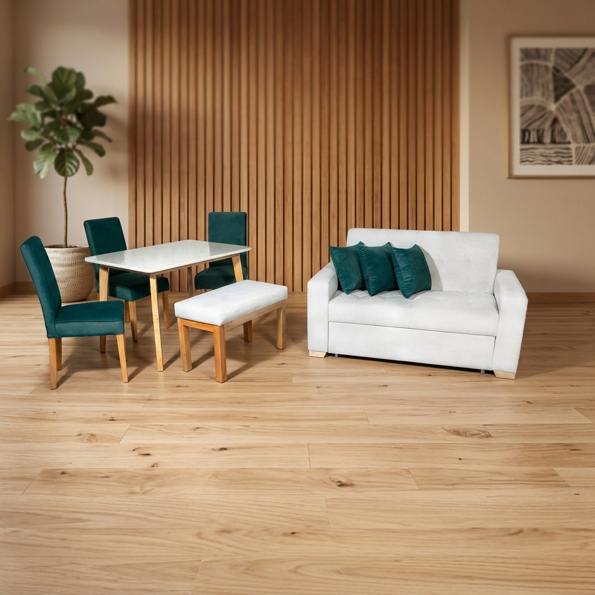
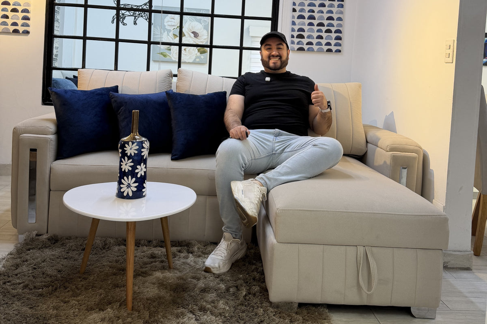

Tu primer hogar.
Todo comienza aquí.
Un sofá que también es cama. Una mesa para cuatro. Piezas que van juntas, para empezar a vivir tu espacio.
Conocer el Combo Río ↗
Menos decisiones.
Más ganas de llegar.
El Combo Río reúne sala y comedor en una sola elección. Puedes revisar la tela de cada pieza con el equipo de Saira y confirmar qué funciona en tu hogar.

Esto viene contigo.
- 01
Sofá cama Mónaco
Dos puestos, espaldar reclinable, carrito y tres cojines.
- 02
Comedor Thiago
Base y tapa de cuatro puestos.
- 03
Tres sillas Río
Respaldo alto, recto y liso.
- 04
Butaco Río
Una banca que completa el conjunto.
Encuentra su lugar
en tu casa.
Selecciona una pieza y revisa sus medidas publicadas. Recuerda comprobar puertas, escaleras y el espacio de circulación.
Medidas aproximadas publicadas por Saira. Confirma la configuración final con un asesor.

El siguiente paso
es hacerlo tuyo.
Consulta telas, disponibilidad, fabricación y entrega directamente con Saira.
Consultar el Combo Río ↗Ver producto y condiciones en Saira →ESTRATEGIA DE AUTOMATIZACIÓN · SAMUEL ACUÑA
Vender el ambiente con las medidas claras.
Lo observado. El Combo Río reúne sofá cama Mónaco, comedor Thiago, tres sillas Río y un butaco Río. La landing muestra las piezas y sus dimensiones junto a la consulta.
Hipótesis para validar. Resolver primero el encaje en el espacio podría producir consultas más concretas para los asesores actuales de Saira. Se debe validar con sus conversaciones reales.
Automatización a implementar. Convertir la consulta del Combo Río en una ficha con selección, medidas y ciudad; asignarla al canal de asesoría existente y actualizar la etapa con cotización y pedido confirmados. Integraciones, acceso y reglas se definen con Saira, sin duplicar sus canales actuales.
TRES PRIORIDADES, EN ESTE ORDEN
- 01
Llevar al ambiente completo
Presentar el Combo Río como conjunto, usando su fotografía real y un recorrido por las piezas. Enlazar esta selección desde contenido sobre amoblar sala y comedor.
- 02
Preparar la asesoría
Pedir medidas del espacio, ciudad y preferencias de tela al consultar. Comparar con las dimensiones publicadas; Saira confirma fabricación, colores, disponibilidad y entrega.
- 03
Conectar con el proceso actual
Mantener la selección al pasar al asesor o canal existente. Registrar consulta, cotización y pedido pagado; cualquier conexión con sus sistemas requeriría implementación adicional.
Qué medir si se implementa
Consultas con medidas · cotizaciones del combo · pedidos pagados · dudas repetidas antes de comprar
Son indicadores propuestos, no resultados obtenidos. Esta demostración no instala seguimiento ni integra sistemas internos.Base: catálogo público investigado el 1 de noviembre de 2026. Fuente oficial 1 · Fuente oficial 2. Estrategia independiente preparada el 2 de noviembre; su ejecución y condiciones se acuerdan con Saira Muebles.